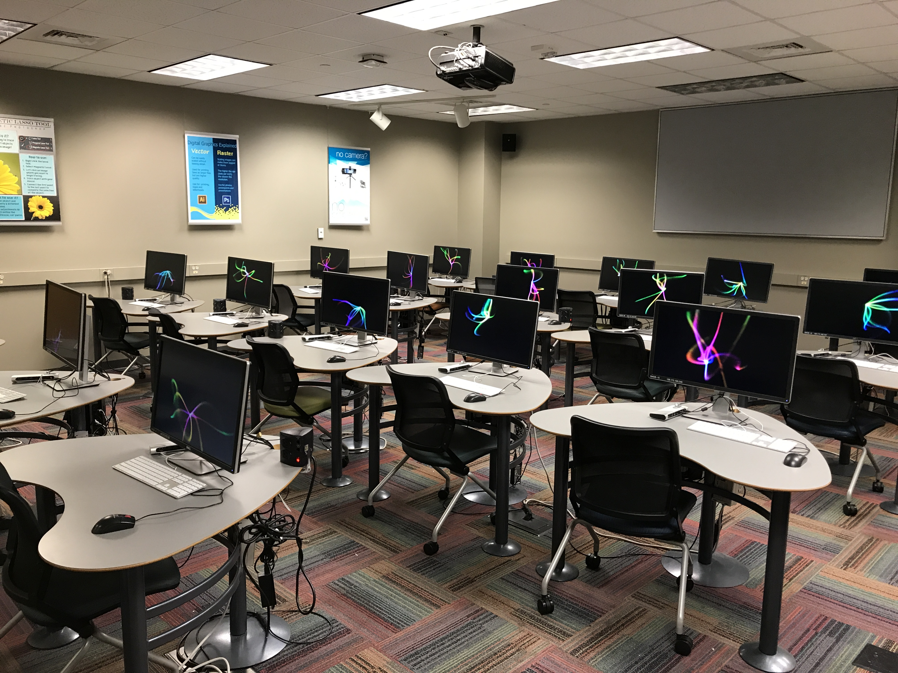

This is not the end, this is not even the beginning of the end, but perhaps it is the end of beginning.
I tend to make a summary at major moments in my life. Convocation is at tonight and commencement is tomorrow, and this is it.
If I look back at myself 2 years ago, I would feel like looking at a different person in terms of things I am working on daily. I’m not saying I am so knowledgeable right now, I just knew nothing about programming at all. I still remember the first class I took in UD–I watched the professor ssh to a server, operate files using bash command and using Vim to edit codes fluently and I had no idea what it was. I learned a little bit C in my undergraduate, but I only knew you had to include a certain library to print “hello world”. Our first assignment had to be submitted in tar file compressed using a command, I did not even know I had to cd into the file folder to do that, but actually, I did not know what tar file was. The course was mainly about high-performance computing and our final project was to parallelize radix sort on Cuda. It assumed that students knew basic algorithms and C programming, but I did not even know what radix sort was, let alone optimize it. To be honest, I did not know any other sorting algorithms until I took the algorithm class the second semester.
But after endless online tutorials and office hours, we finally turned in our report and got an A on that. Well, it is easy talking about the whole experience afterwards, but you know what you have been through.
However, it was until the first winter session when Will took me to Andy’s front-end class that I found this was what I was looking for. Nothing had been better than the instant response and sense of accomplishment you received when coding. Then I embarked on a wonderful journey of web development and for the first time, I realized I loved coding so much. Ever since then, the Mac room at the lower level of the library has been the place that I spent most of my spare time. Even now, I am typing these words here. Sometimes, I am the only one in the room, especially on Friday nights, and I enjoyed it. Certainly, I could and should go to more parties and make more friends, but I felt like that I didn’t even have enough time for myself, I really could not afford time for someone I don’t know. That being said, I did not feel lonely at all, I made a lot of incredible friends and had all kinds of brand new experience–like shooting guns, visiting countless museums and gazing at arts that I have only seen on books. Here is what I love here, you have a chance to do anything you love, of course legally, you do not have to worry about that you might miss something–it is always there, you only have to focus on the most important things right now and go for it whenever you like.
I never regretted flying thousands of miles away from home and living in a completely new environment, cause I believed I would meet great people and I did. Nevertheless, I met some aimless people here, who claimed a goal but never fought for it. Most of the time, I was inspired by people surrounding me. In a data structure course I was auditing, the lecturer was a Ph.D. student in his 20s and an audience in the first row was a gray-haired gentleman perhaps in his 70s. It was just in harmony and no one doubted it.

Another person I respected the most was Andy Novocin. I considered him as my mentor though he was not technically my advisor. To a lot of people, being smart is an excuse for not being hard-working. Andy is never this type of person though he is one of the smartest guys I have ever seen. He got his doctor’s degree at 24, but never stopped exploring and working. I feel like that the world would only be considered as fair when success only belongs to this type of person. Another thing I learned from him was that there is always a solution unless you don’t want to find. Nowadays, there are really few problems you can not use Google to solve in daily life. I met a lot of people, who always asked others for help whenever encountering problems. I’m not saying this is a bad habit, especially after a long struggling, but at least, think about it, otherwise you’ll never learn. When looking back at our life, we hardly remember the days when we laid on the sofa and watched TVs, but we had those struggling moments deep in memory. When those unsolved problems haunted us day and night, they became the most valuable recalls later in life.
If there is a lesson that I have learned in past 2 years, it must be–always keep an open mind to things you don’t know before, you may love it in the end. People tend to judge emerging things based on their appearance, but when we take the time to think about what is behind, we will always explore something new and worthwhile.